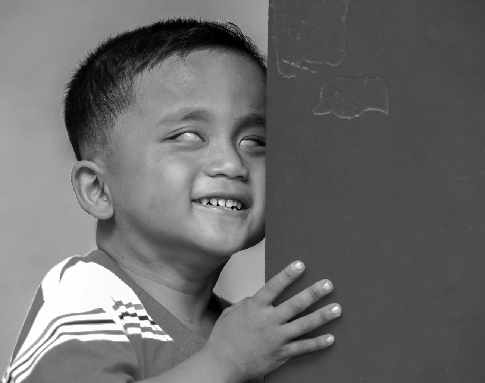
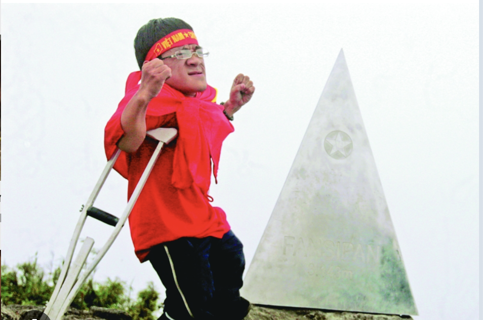
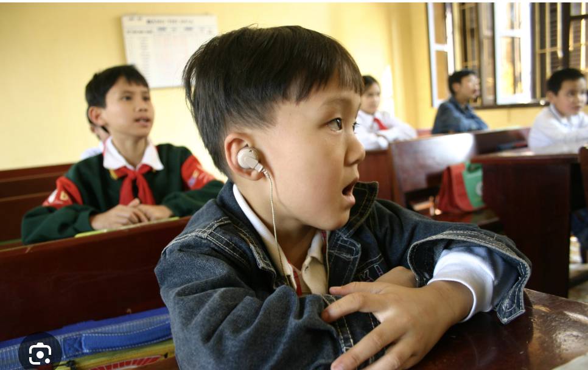

Digital Opportunity for Special Education & Health
Một hệ sinh thái công nghệ chữa lành khoảng cách giữa con người với con người.
D.O.S.E không chỉ là một ứng dụng hỗ trợ người khuyết tật. Đây là một nền tảng social-tech nơi accessibility, giáo dục, cơ hội và cộng đồng cùng hoạt động như một hệ thống biết lắng nghe nhu cầu thật.
Strategic Framework
Bốn trụ cột không phải bốn tính năng. Đó là bốn lớp tạo nên một xã hội hòa nhập hơn.
D.O.S.E được tổ chức như một framework sản phẩm: mỗi trụ cột giải quyết một phần khác nhau của hành trình, nhưng tất cả cùng phục vụ một mục tiêu là giảm rào cản, tăng cơ hội và nuôi dưỡng sự thấu hiểu thật.

ACCESS
Biến WCAG, keyboard flow, text-to-speech và hiển thị linh hoạt thành chuẩn nền của sản phẩm.
Mở Access module
EDUCATION
Tạo hai nhánh học: hỗ trợ người khuyết tật và giáo dục cộng đồng về cách hiểu đúng.
Mở Education hub
OPPORTUNITY
Định nghĩa lại việc làm hòa nhập bằng độ phù hợp, accommodation và tín hiệu doanh nghiệp an toàn.
Mở Opportunity portal
HUMANITY
Câu chuyện, mentor và cộng đồng là lớp giữ cho D.O.S.E không trở thành một ứng dụng vô cảm chỉ biết chức năng.
Mở Humanity communitySchool of Understanding
“Trường học về tâm hồn” là phần khiến D.O.S.E khác biệt thật sự.
Đây không phải nơi nói người dùng “hãy đồng cảm hơn”. Đây là nơi cộng đồng được đặt vào các tình huống thật, được phản tư có dẫn dắt và học cách thay đổi hành vi sau khi đã hiểu trải nghiệm của người khác.
Empathy Simulation
Mô phỏng dyslexia, suy giảm thính lực, khó đọc màn hình hoặc lo âu xã hội bằng những trải nghiệm có kiểm soát.
Emotional Safety
Người học luôn có quyền tạm dừng, thoát ra và quay lại sau, để việc học thấu hiểu không trở thành một áp lực mới.
Reflection Loop
Sau mô phỏng là câu hỏi phản tư: mình vừa cảm thấy gì, mình đã hiểu thêm điều gì và mình sẽ thay đổi điều gì.
Signature Experience
Hành trình học đồng cảm
- Chuẩn bị Giới thiệu rào cản và thiết lập ngữ cảnh an toàn trước khi bước vào mô phỏng.
- Trải nghiệm Người dùng đi qua các tình huống mô phỏng có giới hạn thời lượng và nhịp rõ ràng.
- Giải thích AI Mentor hoặc hướng dẫn viên số diễn giải điều vừa xảy ra theo ngôn ngữ đơn giản.
- Chuyển hóa Gợi ý những thay đổi nhỏ nhưng cụ thể trong lớp học, tài liệu và môi trường làm việc.
Accessibility Engine
Trợ năng phải được nhìn thấy như một năng lực sản phẩm, không phải một checkbox kỹ thuật.
Ngay trên landing page này, D.O.S.E trình diễn cách hệ thống phản hồi theo nhu cầu đọc, nhìn, nghe và điều hướng.
Tùy chọn hiển thị
High contrast, reduced motion, chữ lớn, dark mode và simple mode giúp giao diện tự thích nghi.
High Contrast
Large Text
Simple Mode
Reduced Motion
Đọc nội dung thành tiếng
AI Mentor và lớp trợ năng có thể đọc mô tả, tóm tắt lại và làm dịu độ phức tạp của nội dung.
Điều hướng bằng bàn phím
Từ skip link tới keytip, toàn bộ điều hướng chính được giữ ổn định, dễ đoán và rõ focus.
Thử dùng phím Tab để di chuyển và Alt + M để tới nội dung chính.
Join the Ecosystem
D.O.S.E cần người học, gia đình, giáo viên, mentor, doanh nghiệp và builder cùng bước vào.
Nếu bạn muốn xây một nền tảng công nghệ có linh hồn riêng, đây là nơi để bắt đầu: học cách hiểu, hỗ trợ đúng và cùng nhau biến sự thấu cảm thành cấu trúc thật của sản phẩm.